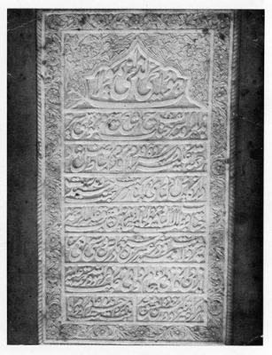

Mahmûd-ı Şebüsterî’nin merkadindeki Farsça kitâbesinin Türkçesi

O’dur ölmez diri
Burası, şeyhlerin şeyhi Şeyh Mahmûd-ı Şebüsterî’nin yüce merkadidir; Allah ona rahmet etsin. Önüne ön olmayan makamın halvet yerinde üstünlük yaygısına ayak basmış, büyük velilerin kadehinden sevgi şerbetini tatmış, Allah rahmet etsin, veliler kutbu efendimiz Bahaeddin Yakub’un elinden vilayet hırkasını giymiş, yedi yüz yirmi yılında otuz üç yaşında bu fanî evden ebedîlik âlemine göçmüştür. Allah’ın rahmeti ona olsun.
Gönlü aşkla diri olan asla ölmez;
Ebedîliğimiz âlem cerîdesine kaydedilmiştir.[1]